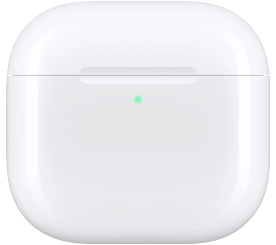
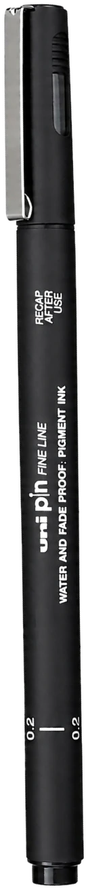

Branding e site · Conceito
TORRA
Marca de café especial. Identidade, embalagem e site.
Boas ideias começam com uma conversa.
As minhas estão aqui, em cima da mesa.


curtiu? me chama
Design que dá vontade de ver de perto.
Sou Lucas Petry. Designer, educador e curioso por tudo que conecta boas ideias a experiências de verdade.
Explore os projetos ↓Uma seleção de conceitos de design. Projetos ilustrativos, por enquanto.
Marca de café especial. Identidade, embalagem e site.
Estúdio de mobiliário modular. Homepage com exploded view 3D.
Perfume de nicho. Um mundo navegável por scroll.
Landing de companhia aérea com Nova York em 3D.
App de produtividade. Homepage e sistema de design.
Relojoaria de luxo. Branding e e-commerce.
Comecei no marketing. Entre sites, identidades e estratégias, encontrei no design a minha forma de conectar ideias e pessoas.
Hoje, sou designer e instrutor de Vibe Design na Asimov Academy. Ensino a transformar possibilidades da IA em projetos com intenção.
Lucas Petry.Designer e instrutor de Vibe Design na Asimov Academy. Design para dar forma às ideias, educação para compartilhar o processo e IA para explorar possibilidades.
A madeira conecta o cenário. Imagens e planos em CSS 3D dão volume aos objetos. O scroll conduz a câmera, enquanto texto e controles continuam acessíveis em HTML.
No modo 3D, uma miniatura permite girar e separar essas camadas para ver como elas se relacionam.
Design, uma colaboração ou só uma boa conversa.
Lucas Petry © 2026 · Feito com intenção.